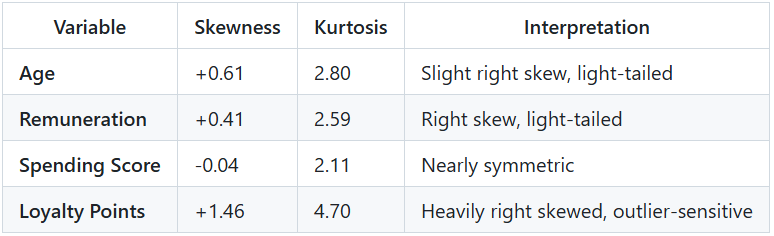
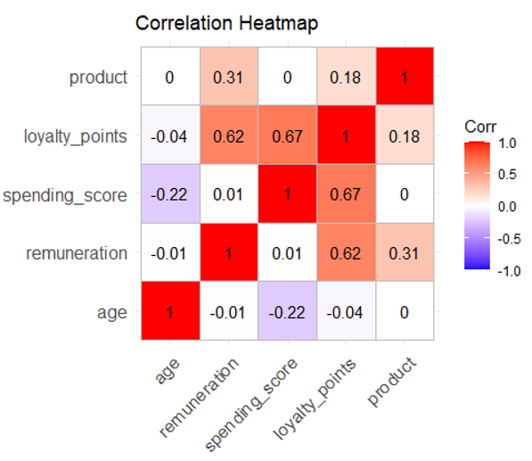
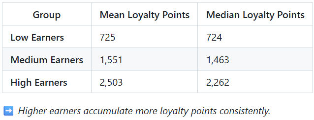
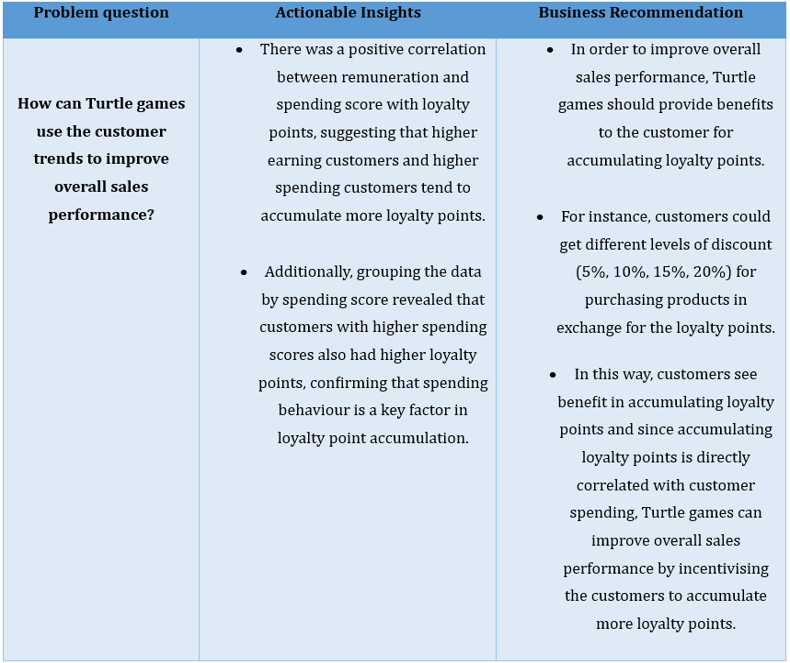

<title>Customer Analytics Turtle Games</title>
<link rel="preconnect" href="https://fonts.googleapis.com">
<link rel="preconnect" href="https://fonts.gstatic.com" crossorigin>
<link rel="stylesheet" href="https://fonts.googleapis.com/css2?family=Bricolage+Grotesque:opsz,wght@12..96,500;12..96,600;12..96,700&family=Source+Serif+4:opsz,wght@8..60,400;8..60,600&family=IBM+Plex+Mono:wght@400;500&display=swap">
<style>
:root {
  --ground:#F7F8F7; --surface:#FFFFFF; --ink:#141A19; --ink-2:#3A4644;
  --muted:#5C6866; --rule:#DFE4E1; --rule-strong:#C3CCC8;
  --accent:#0F9B86; --accent-text:#0A6B5C; --accent-wash:#E4F1ED;
  --data-2:#BE851C; --data-flat:#B9C3C0;
  --shadow:0 1px 2px rgba(20,26,25,.05), 0 10px 28px rgba(20,26,25,.06);
}
@media (prefers-color-scheme: dark) {
  :root:not([data-theme="light"]) {
    --ground:#0E1211; --surface:#161B1A; --ink:#E9EEEC; --ink-2:#C2CBC8;
    --muted:#97A3A0; --rule:#262E2C; --rule-strong:#37413E;
    --accent:#2FAA93; --accent-text:#58C6B0; --accent-wash:#14302B;
    --data-2:#B0821F; --data-flat:#414B48;
    --shadow:0 1px 2px rgba(0,0,0,.4), 0 12px 32px rgba(0,0,0,.35);
  }
}
:root[data-theme="dark"] {
  --ground:#0E1211; --surface:#161B1A; --ink:#E9EEEC; --ink-2:#C2CBC8;
  --muted:#97A3A0; --rule:#262E2C; --rule-strong:#37413E;
  --accent:#2FAA93; --accent-text:#58C6B0; --accent-wash:#14302B;
  --data-2:#B0821F; --data-flat:#414B48;
  --shadow:0 1px 2px rgba(0,0,0,.4), 0 12px 32px rgba(0,0,0,.35);
}
* { box-sizing:border-box; }
body { margin:0; background:var(--ground); color:var(--ink);
  font-family:"Source Serif 4",Georgia,serif; font-size:17px; line-height:1.65;
  -webkit-font-smoothing:antialiased; }
h1,h2,h3,h4 { font-family:"Bricolage Grotesque","Helvetica Neue",Arial,sans-serif;
  margin:0; text-wrap:balance; letter-spacing:-.015em; }
.mono,.label,.eyebrow,.tag,.nav-l,.lnk,.btn,th,td,figcaption,.meta,.crumb
  { font-family:"IBM Plex Mono",ui-monospace,Menlo,monospace; }
a { color:var(--accent-text); text-decoration-thickness:1px; text-underline-offset:3px; }
a:focus-visible,button:focus-visible { outline:2px solid var(--accent); outline-offset:3px; border-radius:2px; }
.wrap { max-width:820px; margin:0 auto; padding:0 28px; }
.wide { max-width:1060px; margin:0 auto; padding:0 28px; }

/* nav */
.nav { position:sticky; top:0; z-index:40; border-bottom:1px solid var(--rule);
  background:color-mix(in srgb,var(--ground) 88%,transparent); backdrop-filter:blur(8px); }
.nav-in { max-width:1060px; margin:0 auto; padding:0 28px; height:54px;
  display:flex; align-items:center; gap:24px; }
.nav-name { font-family:"Bricolage Grotesque",sans-serif; font-weight:700;
  font-size:15px; margin-right:auto; text-decoration:none; color:var(--ink); }
.nav-l { font-size:12px; color:var(--muted); text-decoration:none; }
.nav-l:hover { color:var(--ink); }
.theme-btn { font-family:"IBM Plex Mono",monospace; font-size:11px; background:transparent;
  border:1px solid var(--rule-strong); color:var(--muted); padding:4px 9px;
  border-radius:3px; cursor:pointer; }
.theme-btn:hover { color:var(--ink); border-color:var(--ink); }

/* masthead */
.mast { padding:56px 0 34px; border-bottom:1px solid var(--rule); }
.crumb { font-size:12px; color:var(--muted); text-decoration:none; }
.crumb:hover { color:var(--ink); }
.kick { font-family:"IBM Plex Mono",monospace; font-size:12px; color:var(--accent-text);
  margin:22px 0 8px; }
.mast h1 { font-size:clamp(30px,4.6vw,46px); font-weight:600; line-height:1.1; max-width:20ch; }
.meta { margin-top:24px; display:flex; flex-wrap:wrap; gap:8px 22px;
  font-size:12.5px; color:var(--muted); }
.mast-links { margin-top:24px; display:flex; flex-wrap:wrap; gap:16px; align-items:center; }
.lnk { font-size:13px; }
.btn { font-size:13px; text-decoration:none; background:var(--ink); color:var(--ground);
  padding:10px 18px; border-radius:3px; }
.btn:hover { background:var(--accent-text); color:#fff; }

/* body */
main { padding:6px 0 20px; }
h2 { font-size:14px; font-weight:600; letter-spacing:.01em;
  padding-top:46px; margin-bottom:2px; display:flex; align-items:baseline; gap:14px; }
h2 .l { flex:1; height:1px; background:var(--rule); }
h3 { font-size:20px; font-weight:600; margin:30px 0 0; }
h4 { font-size:15px; font-weight:600; margin:22px 0 0; color:var(--ink); }
p { margin:14px 0 0; max-width:66ch; color:var(--ink-2); }
p strong, li strong, td strong { color:var(--ink); font-weight:600; }
ul { margin:14px 0 0; padding:0; list-style:none; max-width:66ch; }
li { position:relative; padding:9px 0 9px 20px; border-top:1px solid var(--rule);
  color:var(--ink-2); font-size:16px; }
li:last-child { border-bottom:1px solid var(--rule); }
li::before { content:""; position:absolute; left:0; top:18px; width:7px; height:1px;
  background:var(--accent); }
code { font-family:"IBM Plex Mono",monospace; font-size:.88em; background:var(--surface);
  border:1px solid var(--rule); border-radius:3px; padding:1px 5px; }

blockquote { margin:20px 0 0; padding:16px 20px; background:var(--surface);
  border-left:2px solid var(--accent); border-radius:0 3px 3px 0; }
blockquote p { margin:0; color:var(--ink); font-size:18px; }
blockquote p + p { margin-top:10px; font-size:16px; color:var(--ink-2); }
blockquote .label { display:block; font-size:10.5px; letter-spacing:.13em;
  text-transform:uppercase; color:var(--muted); margin-bottom:7px; }

.tbl-scroll { overflow-x:auto; margin-top:18px; }
table { border-collapse:collapse; width:100%; font-size:13.5px; }
th,td { text-align:left; padding:10px 14px; border-bottom:1px solid var(--rule);
  vertical-align:top; }
th { font-size:10.5px; letter-spacing:.12em; text-transform:uppercase;
  color:var(--muted); font-weight:500; border-bottom:1px solid var(--rule-strong); }
td { color:var(--ink-2); }
tbody tr:hover td { background:var(--surface); }
.flow th { white-space:nowrap; }

figure { margin:26px 0 0; background:var(--surface); border:1px solid var(--rule);
  border-radius:4px; padding:16px; box-shadow:var(--shadow); }
figure img { display:block; width:100%; height:auto; border-radius:3px; }
figure video { display:block; width:100%; border-radius:3px; background:var(--ground); }
figcaption { margin-top:11px; padding-top:9px; border-top:1px solid var(--rule);
  font-size:11px; color:var(--muted); }
.imgfail { border:1px dashed var(--rule-strong); border-radius:3px; padding:34px 18px;
  text-align:center; font-family:"IBM Plex Mono",monospace; font-size:12px;
  color:var(--muted); background:var(--ground); }

.pill { display:inline-block; font-family:"IBM Plex Mono",monospace; font-size:11px;
  border-radius:3px; padding:2px 8px; }
.pill.yes { color:var(--accent-text); background:var(--accent-wash); }
.pill.no  { color:var(--data-2); border:1px solid var(--data-2); }
.chips { display:flex; flex-wrap:wrap; gap:7px; margin-top:16px; }
.tag { font-size:11.5px; color:var(--muted); border:1px solid var(--rule-strong);
  border-radius:3px; padding:4px 9px; }

.next { border-top:1px solid var(--rule-strong); background:var(--surface); margin-top:56px; }
.next-in { max-width:1060px; margin:0 auto; padding:40px 28px;
  display:flex; gap:20px; flex-wrap:wrap; align-items:center; }
.next-in .who { margin-right:auto; font-size:15px; color:var(--ink-2); max-width:44ch; }
footer { border-top:1px solid var(--rule); padding:22px 0 42px;
  font-family:"IBM Plex Mono",monospace; font-size:12px; color:var(--muted); }
.foot-in { max-width:1060px; margin:0 auto; padding:0 28px; display:flex; gap:18px; flex-wrap:wrap; }
.foot-in span { margin-right:auto; }
@media (max-width:760px) { .nav-l { display:none; } h2 { padding-top:36px; } }
</style>
<nav class="nav"><div class="nav-in">
  <a class="nav-name" href="index.html">Dipendra Limbu</a>
  <a class="nav-l" href="index.html">All projects</a>
  <a class="nav-l" href="#connect">Connect</a>
  <button class="theme-btn" id="tbtn" type="button">theme</button>
</div></nav><header class="mast"><div class="wrap">
  <a class="crumb" href="index.html">&larr; All projects</a>
  <div class="kick">02 &middot; Customer Analytics</div>
  <h1>Customer Trends Analytics (Turtle Games)</h1>
  <div class="meta"><span>r = 0.67 spending score</span><span>five customer clusters</span><span>+0.22 mean polarity</span></div>
  <div class="mast-links"><a class="lnk" href="https://nbviewer.org/github/DKL59/Dipendra-Limbu/blob/main/LSE_DA301_FINAL_Assignment_Python_Limbu_Dipendra_Turtle_games.ipynb">Open the Jupyter Notebook &rarr;</a><a class="lnk" href="LSE_DA301_Assignment_R_Limbu_Dipendra.R">Open the R Script &rarr;</a></div>
</div></header>
<main><div class="wrap">

<h2>Overview<span class="l"></span></h2>
<p>This project was completed as part of the <strong>Data Analytics Career Accelerator</strong> from <strong>The London School of Economics and Political Science (LSE)</strong> in collaboration with FourthRev.</p>
<blockquote>
  <span class="label">Objective</span>
  <p>To identify customer trends that can help <strong>Turtle Games</strong> improve its overall sales performance through data-driven insights and customer segmentation.</p>
</blockquote>

<h2>Business Problem<span class="l"></span></h2>
<blockquote>
  <p>"How can Turtle Games use customer trends to improve overall sales performance?"</p>
</blockquote>
<p>The analysis focused on:</p>
<ul>
  <li>Understanding the relationship between <strong>customer demographics</strong> (age, remuneration, spending score) and <strong>loyalty points</strong>.</li>
  <li>Exploring <strong>customer sentiment</strong> from reviews and summaries to gauge perception.</li>
  <li>Segmenting customers based on <strong>income and spending patterns</strong> to tailor marketing strategies.</li>
</ul>

<h2>Tools &amp; Technologies<span class="l"></span></h2>
<div class="tbl-scroll"><table>
<thead><tr><th>Category</th><th>Tools Used</th></tr></thead>
<tbody>
<tr><td><strong>Data Analysis</strong></td><td>Python (pandas, numpy, scikit-learn), R (dplyr)</td></tr>
<tr><td><strong>Data Visualisation</strong></td><td>Python (Matplotlib, Seaborn), R (ggplot2, ggcorrplot)</td></tr>
<tr><td><strong>Statistical Analysis</strong></td><td>Python (Scipy, Statsmodels), R (moments)</td></tr>
<tr><td><strong>Natural Language Processing (NLP)</strong></td><td>Python (nltk, wordcloud, textblob, collections, vaderSentiment)</td></tr>
<tr><td><strong>Environment</strong></td><td>Jupyter Notebook, RStudio</td></tr>
</tbody></table></div>

<h2>Analytical Approach<span class="l"></span></h2>
<h3>1. Exploratory Data Analysis (EDA)</h3>
<ul>
  <li>Assessed distributions for key variables including <strong>age</strong>, <strong>remuneration</strong>, <strong>spending score</strong>, and <strong>loyalty points</strong>.</li>
  <li>Calculated <strong>skewness</strong> and <strong>kurtosis</strong> metrics to evaluate structural data symmetry and tail behaviour.</li>
</ul>
<h3>2. Correlation Analysis</h3>
<ul>
  <li>Generated an interactive correlation heatmap to map linear dependencies across variables.</li>
  <li>Identified strong positive correlations linking <strong>spending score</strong> and <strong>remuneration</strong> with <strong>loyalty points</strong>.</li>
</ul>
<h3>3. Customer Segmentation</h3>
<ul>
  <li>Partitioned the customer base into discrete behavioural categories: <strong>Low</strong>, <strong>Medium</strong>, and <strong>High</strong> income/spending bands.</li>
  <li>Analysed variations in <strong>loyalty point accumulation</strong> profiles across each distinct group.</li>
</ul>
<h3>4. Sentiment Analysis</h3>
<ul>
  <li>Evaluated customer review and summary text data to calculate baseline sentiment polarity metrics.</li>
  <li>Generated text word clouds mapped against polarity scores to isolate high-frequency terms and determine overall perception tone.</li>
</ul>

<h2>Key Insights<span class="l"></span></h2>
<h3>Demographic Overview</h3>
<ul>
  <li><strong>Average customer age:</strong> 39 years (range: 17&ndash;72).</li>
  <li><strong>Average annual remuneration:</strong> £48,080 (range: £12,300&ndash;£112,340).</li>
  <li><strong>Average spending score:</strong> 50 (range: 1&ndash;99).</li>
  <li><strong>Average loyalty points:</strong> 1,578 (range: 25&ndash;6,847).</li>
</ul>
<h3>Distribution Analysis</h3>
<figure><figcaption>Distribution Analysis</figcaption></figure>

<h2>Correlation Findings<span class="l"></span></h2>
<figure><figcaption>Correlation Findings</figcaption></figure>
<ul>
  <li><strong>Remuneration &harr; Loyalty Points:</strong> Moderate positive correlation (<strong>r = 0.62</strong>)</li>
  <li><strong>Spending Score &harr; Loyalty Points:</strong> Stronger positive correlation (<strong>r = 0.67</strong>)</li>
  <li>Indicates that higher spenders and earners accumulate more loyalty points.</li>
</ul>

<h2>Customer Segmentation Insights<span class="l"></span></h2>
<h3>Loyalty Points by Remuneration Group</h3>
<figure><figcaption>Loyalty Points by Remuneration Group</figcaption></figure>
<h3>Loyalty Points by Spending Group</h3>
<ul>
  <li><strong>High Spending</strong> customers accumulate the <strong>most loyalty points</strong>.</li>
  <li><strong>Medium-High</strong> group shows balanced and consistent loyalty accumulation.</li>
  <li><strong>Low Spending</strong> group occasionally contains outliers with very high loyalty points.</li>
</ul>
<h3>Customer Clustering</h3>
<ul>
  <li>Identified <strong>five customer clusters</strong> based on <strong>spending and remuneration patterns</strong>.</li>
  <li>These clusters provide opportunities for <strong>targeted promotions</strong> and <strong>personalized campaigns</strong>.</li>
</ul>

<h2>Sentiment Analysis Results<span class="l"></span></h2>
<h3>Summary Sentiment</h3>
<ul>
  <li><strong>Mean polarity:</strong> +0.22 &rarr; <em>Generally positive tone</em></li>
  <li>Common positive words: <em>"great", "good", "love", "cute"</em></li>
  <li>Occasional neutral/negative mentions: <em>"game"</em> (some critiques)</li>
</ul>
<h3>Review Sentiment</h3>
<ul>
  <li><strong>Mean polarity:</strong> +0.217 &rarr; <em>Slightly positive overall sentiment</em></li>
  <li>Frequent words: <em>"great", "fun", "love", "good"</em></li>
  <li>Suggests overall positive customer experience with some minor product feedback.</li>
</ul>

<h2>Recommendation<span class="l"></span></h2>
<figure><figcaption>Recommendation</figcaption></figure>

<h2>Porficiencies Demonstrated<span class="l"></span></h2>
<ul>
  <li><strong>Data Wrangling &amp; Descriptive Statistics</strong>: Programmatically cleaning raw datasets, identifying outliers, and generating core summary statistics (mean, median, skewness, kurtosis).</li>
  <li><strong>Correlation &amp; Clustering Analysis</strong>: Executing paired correlation tests to isolate dependencies and executing customer segmentation to isolate high-value behavioral groups.</li>
  <li><strong>Natural Language Processing (NLP)</strong>: Utilizing lexicon-based classifiers (<code>TextBlob</code>, <code>vaderSentiment</code>) to quantify text polarity and extract user perception trends.</li>
  <li><strong>Data Visualization &amp; Interpretation</strong>: Constructing scannable exploratory heatmaps and word clouds to translate abstract data tables into strategic business realities.</li>
  <li><strong>Structured Professional Communication</strong>: Synthesizing dense statistical results into clean, actionable executive summaries tailored for non-technical stakeholders.</li>
</ul>

<h2>Summary<span class="l"></span></h2>
<p>This project demonstrates how data analytics can uncover key customer trends that drive actionable sales strategies.<br>Through correlation, segmentation, and sentiment analysis, the study provides <strong>evidence-based recommendations</strong> for improving Turtle Games' sales and loyalty performance.</p>

</div></main><section class="next" id="connect">
  <div class="next-in">
    <p class="who"><strong>Dipendra Limbu</strong> | Nepal | Data Analyst | Business Intelligence | dklimbuz@hotmail.com</p>
    <a class="btn" href="index.html">All projects</a>
    <a class="lnk" href="https://www.linkedin.com/in/dipendra-limbu-4234901a9/">LinkedIn &rarr;</a>
    <a class="lnk" href="https://github.com/DKL59/Dipendra-Limbu">GitHub &rarr;</a>
  </div>
</section>
<footer><div class="foot-in">
  <span>Dipendra Limbu &middot; Data Analyst | Business Intelligence &middot; Nepal</span>
  <a href="index.html">Home</a><a href="https://www.linkedin.com/in/dipendra-limbu-4234901a9/">LinkedIn</a><a href="https://github.com/DKL59/Dipendra-Limbu">GitHub</a>
</div></footer>
<script>
(function () {
  var root = document.documentElement, b = document.getElementById("tbtn");
  try { var s = localStorage.getItem("dl-theme"); if (s) root.setAttribute("data-theme", s); } catch (e) {}
  b.addEventListener("click", function () {
    var dark = root.getAttribute("data-theme") === "dark" ||
      (!root.getAttribute("data-theme") && matchMedia("(prefers-color-scheme: dark)").matches);
    var n = dark ? "light" : "dark";
    root.setAttribute("data-theme", n);
    try { localStorage.setItem("dl-theme", n); } catch (e) {}
  });
})();
/* If an image cannot load (preview sandbox blocks the site's own host),
   show its filename rather than a broken icon. */
document.querySelectorAll("figure img").forEach(function (im) {
  im.addEventListener("error", function () {
    var d = document.createElement("div");
    d.className = "imgfail";
    d.textContent = im.getAttribute("src").split("/").pop() + " — loads on the live site";
    im.replaceWith(d);
  });
});
</script>